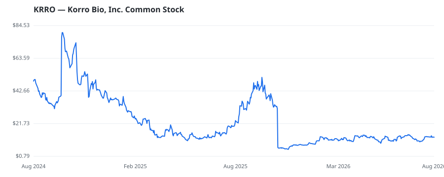

bullish · bearish · n/a — dots: price>SMA10 · SMA10>SMA50 · SMA50>SMA200 · up>down volume (20d)
Pharmaceuticals & Biotech · micro cap

Korro Bio Inc is a biopharmaceutical company with a mission to discover, develop, and commercialize a new class of genetic medicines based on editing RNA, enabling the treatment of both rare and highly prevalent diseases. It is generating a portfolio of differentiated programs that are designed to harness the body's natural RNA editing process to effect a precise yet transient single base edit. By editing RNA instead of DNA, Korro Bio is expanding the reach of genetic medicines by delivering additional precision and tunability. The company operates and manages its business as one reportable se PHARMACEUTICAL PREPARATIONS · website
| Revenue | $6.4M | Net income | $-117.3M |
|---|---|---|---|
| Operating income | $-121.9M | Diluted EPS | $-12.48 |
| Assets | $113.5M | Equity | $51.4M |
This name produced 0.0% of the ranked funds’ total alpha.
🛒 Newly buying: Kalehua Capital Management LLC (+20%, 3.1% of book)
| Fund | Fund alpha vs SPY | Position | % of book |
|---|---|---|---|
| Kalehua Capital Management LLC | +20% | $5M | 3.1% |
Hedge data: SEC EDGAR 13F · ranked funds beat SPY in >50% of their quarters · fund alpha = mirror-portfolio return minus SPY.